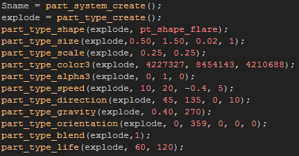
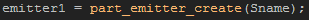
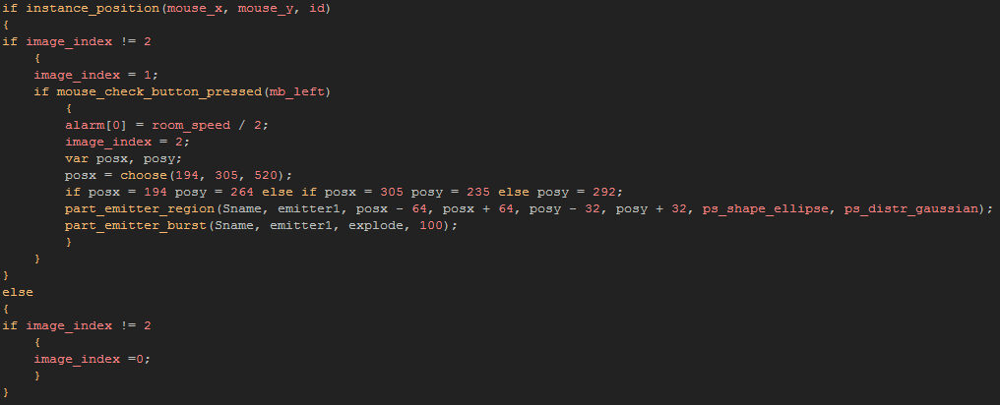
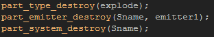

Tutorial
Page 9 of 12
Coding A Burst Emitter
As you saw with the D'n'D actions for particles, you can define emitters to create your particles at specific positions in your room, over defined areas, and with different distributions. This makes them
quite a powerful tool and certainly more flexible for certain things than using the previously mentioned part_particles_create function.
However, it should be noted that emitters, like particles and particle systems, are stored in memory and indexed in a variable and so should be used carefully to prevent memory leaks or other errors.
For this effect, we only need a button object, as it will create the emitter we are going to use, position it within the room and burst the particles when it is pressed, so duplicate a previous button object and
assign it the sprite "spr_Button_Burst" then open the Create Event and add the following lines of code:

There are some things to note with this new particle...
We have defined the color using absolute numeric values here, which can be found by using the different color functions, and we have used additive
blending too to make things prettier.
We have used "wiggle" on the size, speed and direction functions to make the effect more dynamic.
We have set the starting scale to be one quarter of the original particle sprite x and y scale.
We have limited the movement to a 90º angle between 45º and 135º.
So, you can already see that we have a dynamic particle that will be moving quickly upwards, then slow and fall as gravity pulls on it. Great! but what about the emitter? For that wee need to add one final line of
code into the create event:

As with particles and systems, the emitters must also be created and assigned to a variable and that variable should be used when dealing with this emitter from now onwards. You can close the create event and
open the step event now, as we need to modfify the code there to burst this new particle from the created emitter.
Normally you would define an emitter in the create event and then just let it do it's work, but as this is going to be a fireworks display, we are going to move the emitter around depending on a random value
to give a bit more variety to things. So change the step event code to the following:

You can see that not much has changed from previous buttons, but now, instead of creating a new instance for the firework, we are setting an emitter to a position and shape and then bursting 100 particles from
it. The emitter position is always defined as a rectangular area from x1,y1 to x2,y2 and then the shape chosen for the emitter is scaled to fit the over-all area. The shapes can be rectangle, ellipse, diamond
or line and you can also specify different distributions within those shapes from gaussian (more in the middle), linear (equal distribution) or inverse gaussian (more at the edges). the manual contains detailed
information on the constants available for this function.
Once you have that done, you need to add in a new event for the object, and that is a Room End Event. just as before with the firework instances, we don't want to have any possible memory leaks or left
over particles or emitters when the room ends and so we need to do some "cleaning" at the end of the room. Drag a code box into the new event and add the following:

You can now add this new button into your room and test it. Once you are happy, save the game.
Click on the Next button to go to the next page of the tutorial.